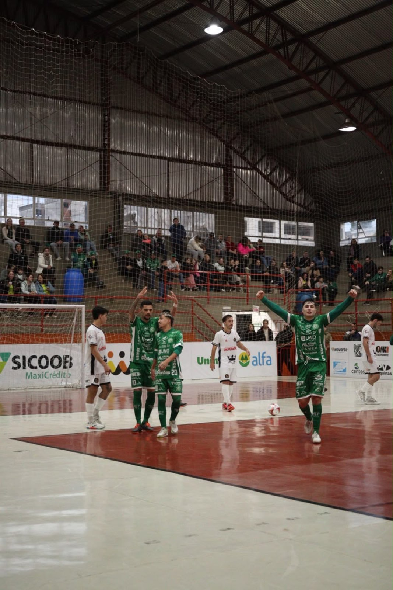
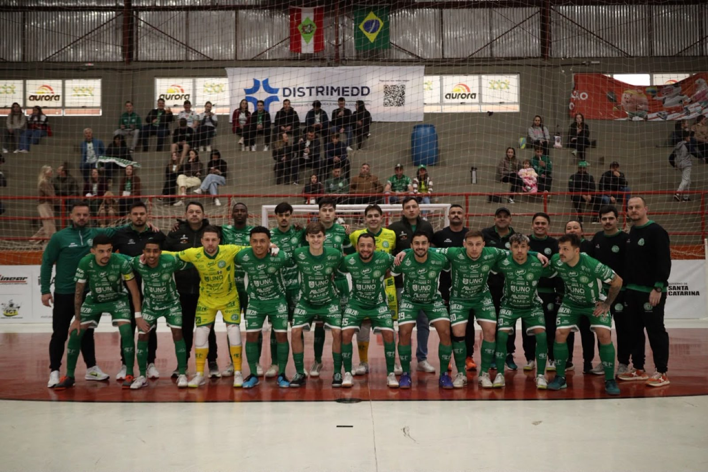
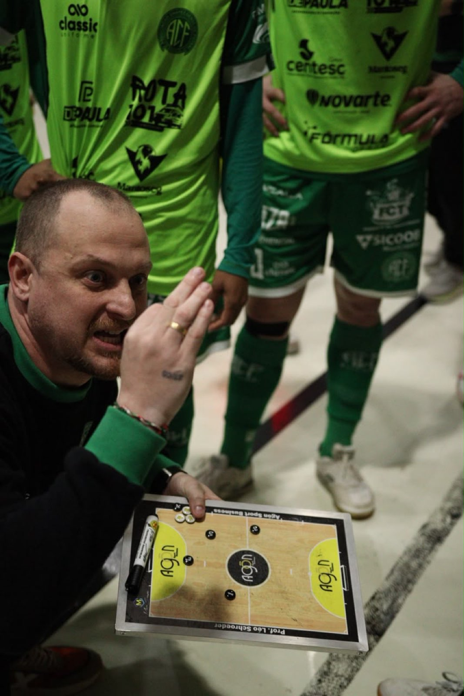

A Prefeitura de Chapecó/Chapecoense/Unochapecó ficou no 3 a 3 com a Apaff/Florianópolis, neste sábado (27/6), no Ginásio Plínio Arlindo De Nes (SER Aurora), em Chapecó. A partida valeu por rodada atrasada, a segunda, do grupo A da Copa Santa Catarina de Futsal.

O equilíbrio prevaleceu até a primeira metade da etapa inicial. O placar de 0 a 0 demonstrava a igualdade nas ações. Após os 10 minutos, a eficiência da Chape Futsal fez a diferença. Os anfitriões abriram o placar aos 10'56". Iury fez contra, depois de escanteio cobrado por Fael. A vantagem aumentou aos 13'26". Em lance de contra-ataque, Kassula recebeu passe de Ximba e chutou rasteiro no canto.
O time de Florianópolis esboçou uma reação no segundo tempo. Aos 6'13", Davi fez o giro e balançou a rede. Porém, os donos da casa não se abateram e anotaram o terceiro aos 10'45". O goleiro Alê Falcone mandou para a área e Fael desviou de letra: 3 a 1. Os visitantes encostaram novamente, aos 14'41", com finalização certeira de Allyson. O empate da Apaff, que estava com o goleiro-linha, veio aos 18'16", por meio de Juninho.

Vem aí o Brasileiro
A próxima semana será especial para a Chapecoense. A equipe do técnico Leo Schroeder estreia na terceira edição do Campeonato Brasileiro de Futsal. O primeiro desafio será no sábado, dia 4 de julho, no ginásio do SESC, em Chapecó, contra o Criciúma, às 16h. Em breve, serão divulgadas informações sobre ingressos. Em 2015, o Verdão das Quadras terminou em terceiro e faturou uma vaga à Supercopa do Brasil, que ocorreu em fevereiro, na cidade de Erechim (RS).

Crédito das fotos: @rogersilva_fotografia/@achapefutsal